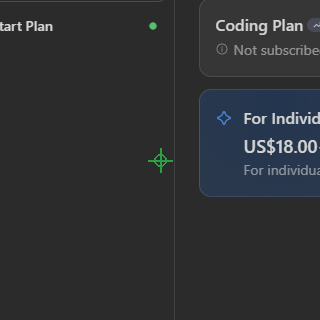

📸 หน้าตาโปรแกรมจริง

หน้าจอหลัก: เมนูไอคอน + แถบโปรไฟล์ + ตารางคำสั่ง + ปุ่มควบคุมทั้งหมด

🎬 การเล่นจริง — เคอร์เซอร์ไล่ตามสคริปต์ (อัดจากโปรแกรมจริง)
✨ ความสามารถ
| ฟีเจอร์ | รายละเอียด |
|---|---|
| 🔴 RECORD (F9) | บันทึกการคลิกเมาส์และการกดคีย์แบบเรียลไทม์ พร้อมจับเวลาหน่วงอัตโนมัติ |
| ▶️ START (F6) | เล่นสคริปต์ที่เปิดใช้ (☑) หนึ่งรอบ |
| 🔁 REPEAT | เล่นวนซ้ำต่อเนื่อง หรือติ๊ก "วนซ้ำไม่จำกัด" (F10) เพื่อวนตลอด |
| ⏹️ STOP (F8) | หยุดทุกอย่างทันที |
| ✅ Checkbox รายแถว | เลือกได้ว่าแถวไหนจะถูกเล่น แถวไหนข้าม |
| ✏️ แก้ค่าในตาราง | ดับเบิลคลิกช่องไหนก็ได้เพื่อแก้ Action / คีย์ / เวลา / Repeat |
| 🎯 จับพิกัดเมาส์ | ดับเบิลคลิกช่อง X หรือ Y → นับถอยหลัง 3 วิ → จับตำแหน่งเมาส์ปัจจุบัน |
| 💾 Save / Load | เก็บสคริปต์เป็นไฟล์ .json + autosave ตอนปิดโปรแกรม |
| 🖥️ Live statusbar | แสดงพิกัดเมาส์และคีย์ที่กดล่าสุดแบบสด ๆ |
| 📦 แพ็กเป็น .exe | รัน build.bat → ได้ไฟล์เดียว dist/AutoMouseMacro.exe ไม่ต้องติดตั้ง Python |
| 🌐 Global Hotkey | F6/F8/F9/F10 กดได้แม้โปรแกรมไม่ได้โฟกัส |
| ⚡ Hot-profile (F1–F4) | ตั้งโฟลเดอร์สคริปต์ แล้วกด F1–F4 โหลดสคริปต์ลำดับที่ 1–4 เล่นทันที |
| 🧙 Record wizard | อัด → ตรวจรายการ → ทดลองเล่น → บันทึก จบในหน้าต่างเดียว (เมนู 🧙 Wizard) |
| 🎲 สุ่มลำดับ/สัดส่วน | เล่นแบบสลับลำดับสุ่ม และ/หรือเลือกเล่นแค่ x% ของแถว (สุ่มชุดใหม่ทุกรอบ) |
| 📜 Log viewer | เปิดดู log ย้อนหลังจากในโปรแกรม (เมนู 📝 Log) เลือกดูรายวันได้ |
| 🖼️ คลิกตามภาพ | ระบุไฟล์ .png → หาบนหน้าจอด้วย OpenCV แล้วคลิกให้เอง |
| 🎛️ โปรไฟล์ | เก็บหลายสคริปต์สลับใช้ (งานบ้าน / เกม A / เกม B) |
| ⏰ เล่นตามเวลา | ตั้งเล่นอัตโนมัติ "ทุก N นาที" หรือ "ทุกวัน HH:MM" |
| 🎯 Action ชุดใหม่ v1.5 | Scroll, Double Click, Ctrl/Shift/Alt+Click, Move Mouse, Save/Restore Cursor, Type Text, Launch App, Wait for Image, Beep |
| 🔌 Custom Action plugins v1.16 | เขียนไฟล์ Python สั้น ๆ ใน plugins/ เป็น Action ใหม่ได้ทันที (ทั้ง GUI และ CLI) — ดู plugins/README.md |
| 🔀 If Image v1.17 | เงื่อนไข: ภาพไม่เจอ → ข้าม N แถวถัดไป (N = ค่า Repeat) — ใช้ Search Area/threshold ร่วมกับ Image Click ได้ |
| 🔍 ค้นหา/Undo/Paste v1.17 | Ctrl+F ค้นหาแถว · Ctrl+Z กู้คืนแถวที่ลบ (50 ชั้น) · เมนู 📋 Paste วางสคริปต์ JSON จากคลิปบอร์ด |
| 🎲 ดีเลย์สุ่ม + ความเร็ว | Secs ใส่ 1-3 = สุ่ม 1–3 วิ • ตัวคูณความเร็ว 0.25×–4× • จำนวนรอบสคริปต์ • คืนเมาส์จุดเดิม |
| ⌨️ CLI mode | เล่นสคริปต์ .json โดยไม่เปิดหน้าต่าง |
| 📊 Progress bar | แสดงความคืบหน้า + ตัวนับรอบขณะเล่น |
| 🖱️ คลิกขวาบนตาราง | คัดลอกแถว / แทรกแถวใหม่ / ลบแถว |
| 🖼️ Search Area | ระบุกรอบค้นหาให้ Image Click: button.png@x,y,กว้าง,สูง — ไม่ใส่ @ = ทั้งจอ |
คำสั่งที่รองรับในตาราง
เมาส์: Left Click / Left Down / Left Up / Right Click / Right Down / Right Up / Middle Click / Middle Down / Middle Up
คีย์บอร์ด: Tap Key / Press Key / Release Key — ช่อง Additional ใส่ชื่อคีย์ เช่น a space enter esc ctrl f1–f12 pgup prtsc หรือรหัส virtual key เช่น 27
คลิกตามภาพ: Image Click — ช่อง Additional ใส่ชื่อไฟล์ .png (เช่น button.png)
โปรแกรมจะจับภาพหน้าจอ หาตำแหน่งของภาพนั้น แล้วคลิกที่จุดศูนย์กลางให้เอง
ต้องติดตั้งเพิ่ม: pip install opencv-python Pillow — ถ้าไม่ติดตั้ง ฟีเจอร์อื่นยังใช้ได้ปกติ
🚀 เริ่มใช้งานเร็ว ๆ
วิธีที่ 1 — ใช้ไฟล์ .exe สำเร็จรูป (แนะนำ)
build.bat # build ครั้งเดียว → dist\AutoMouseMacro.exeจากนั้นดับเบิลคลิก dist\AutoMouseMacro.exe ได้เลย ไม่ต้องติดตั้ง Python
วิธีที่ 2 — รันจากซอร์ส
py -m pip install -r requirements.txt # ติดตั้ง pynput
run.bat # หรือ: py auto_macro.pypy แทน python🎬 ทดลองด้วยสคริปต์เดโม่ (มีให้ในโปรเจกต์)
| ไฟล์ | ทำอะไร |
|---|---|
demo_script.json | เปิด Notepad → พิมพ์ข้อความไทย → เคาะ Enter → บี๊บ → คืนเมาส์จุดเดิม
(แสดงดีเลย์สุ่ม 0.5-1.5 และ Repeat ให้ดูด้วย) |
demo_move_click.json | เลื่อนเมาส์เป็นสี่เหลี่ยม → Scroll ขึ้น/ลง → บี๊บ → คืนเมาส์ (ไม่คลิกอะไรเลย ปลอดภัย) |
โหลดใน GUI: เมนู Load → เลือกไฟล์เดโม่ → กด START
หรือรันทันที: py auto_macro.py demo_script.json
🧪 ทดลองใช้ครั้งแรกใน 60 วินาที
- กด F9 (RECORD) → สถานะเปลี่ยนเป็น "กำลังบันทึก"
- คลิกที่ใดก็ได้บนจอ 2–3 จุด แล้วกด F9 อีกครั้งเพื่อหยุด
- กด START (F6) → เมาส์จะเล่นซ้ำทุกคลิกที่เพิ่งทำ
- ลองกด REPEAT ให้วนตลอด แล้วหยุดด้วย F8
📖 คู่มือการใช้งาน
ทำความรู้จักตาราง
| คอลัมน์ | ความหมาย |
|---|---|
| ☑ | เปิด/ปิดการใช้แถวนี้ (คลิกเพื่อสลับ) |
| # | ลำดับแถว |
| X, Y | พิกัดจุดที่จะย้ายเมาส์ไปก่อนคลิก |
| Button / Action | คำสั่ง: คลิกเมาส์ หรือ กดคีย์ |
| Additional | ชื่อคีย์ (เฉพาะคำสั่งคีย์บอร์ด) |
| Mins / Secs | เวลารอ ก่อน ทำคำสั่งในแถวนั้น |
| Repeat | จำนวนครั้งที่ทำคำสั่งนี้ซ้ำในแถวเดียว |
การแก้ไขตาราง
- คลิกขวาบนแถว: คัดลอกแถวนี้ / แทรกแถวใหม่ด้านบน-ด้านล่าง / ลบแถว
- ดับเบิลคลิกช่อง X / Y → นับถอยหลัง 3 วิ แล้วจับพิกัดเมาส์ปัจจุบันให้อัตโนมัติ
- ดับเบิลคลิกช่องอื่น → เปิดหน้าต่างแก้ค่า (Action เป็น dropdown, ช่องเวลาพิมพ์ได้)
- ปุ่มเสริม: ＋ เพิ่มบรรทัด / － ลบที่เลือก / ▲▼ เลื่อนลำดับ / ล้างทั้งหมด / ปุ่ม Delete
🎛️ โปรไฟล์ และ ⏰ เล่นอัตโนมัติตามเวลา
- แถบ "โปรไฟล์" ใต้เมนู — เก็บสคริปต์ได้หลายชุด สลับใช้ได้ทันที (เก็บใน
macro_profiles.json) - ปุ่ม "⏰ เล่นอัตโนมัติ..." — ตั้งเล่นโปรไฟล์ปัจจุบัน "ทุก N นาที" หรือ "ทุกวัน เวลา HH:MM" (เล่นวน 1 รอบจบ หยุดได้ด้วย F8)
คีย์ลัดทั้งหมด (Global — กดได้แม้ไม่โฟกัสหน้าต่าง)
| คีย์ | ทำอะไร |
|---|---|
| F6 | เริ่มเล่นสคริปต์ |
| F8 | หยุดทั้งหมด |
| F9 | เริ่ม/หยุดบันทึก |
| F10 | สลับวนซ้ำไม่จำกัด |
| Delete | ลบแถวที่เลือก (Ctrl+Z กู้คืนได้) |
| Ctrl+F | ค้นหาแถว (Enter ซ้ำ = ผลถัดไป) |
| Ctrl+Z | กู้คืนแถวที่ลบ/ถูกแทนที่ล่าสุด |
| Double-click | แก้ค่าในเซลล์ |
📦 Build เป็น .exe เอง
build.bat # หรือแบบชัดเจน:
py -m PyInstaller auto_macro.spec --noconfirm --cleanผลลัพธ์: dist/AutoMouseMacro.exe (ไฟล์เดียว ~13 MB, GUI ไม่มี console)
โครงสร้างโปรเจกต์
├── auto_macro.py # โปรแกรมหลักทั้งหมด (ไฟล์เดียวจบ)
├── test_auto_macro.py # unit tests (unittest)
├── auto_macro.spec # ไฟล์ spec ของ PyInstaller
├── build.bat # สคริปต์ build .exe
├── run.bat # สคริปต์รันจากซอร์ส
├── requirements.txt # dependencies
├── pic.png # รูปต้นแบบ
└── docs/ # เอกสารทั้งหมด (md + html)
├── README.md / README.html
├── RESEARCH.md / RESEARCH.html
├── CHANGELOG.md / CHANGELOG.html
└── images/pic.png⌨️ เล่นผ่าน Command Line (ไม่เปิด GUI)
py auto_macro.py script.json # เล่นรอบเดียว
py auto_macro.py script.json --loop # วนไม่จำกัด
py auto_macro.py script.json --loops 5 # 5 รอบ
py auto_macro.py script.json --speed 2 # เร็วขึ้น 2 เท่า
py auto_macro.py script.json --no-log # ไม่บันทึก log
py auto_macro.py script.json --shuffle # สุ่มลำดับแถวทุกรอบ
py auto_macro.py script.json --rows-pct 50 # เล่นแค่ 50% ของแถว (สุ่มชุดใหม่ทุกรอบ)
py auto_macro.py script.json --watchdog # จบแล้วเริ่มใหม่อัตโนมัติ (พัก 3 วิ)
py auto_macro.py script.json --stop-file D:\stop.flg # สร้างไฟล์ = หยุดทันทีหยุดได้ทุกที่: F8/Esc (แม้ไม่โฟกัส), Esc/q ในหน้าต่าง CLI, หรือ Ctrl+C — เหมาะกับ Windows Task Scheduler
📝 Log การเล่น
ทุกครั้งที่เล่น บันทึกลง macro_log_วันที่.txt (หมุนรายวัน เก็บไม่เกิน 500 บรรทัด/ไฟล์):
08:57:05 [START] เริ่มเล่น (CLI) ความเร็ว 1x รอบ=1 แถวที่เล่น=3 <- test.json
08:57:05 [STEP] รอบ 1 แถว 1/3 Press Key ctrl (0.0 วิ) <- test.json
08:57:08 [STOP] หยุดโดยผู้ใช้ (F8/Esc/Ctrl+C) <- test.jsonGUI: เปิด/ปิดในเมนู Settings (จำค่าอัตโนมัติ) • ดูย้อนหลัง: เมนู 📝 Log
เปิด Log viewer เลือกดูไฟล์รายวันได้ • CLI: ปิดด้วย --no-log
⚡ Hot-profile (F1–F4)
งานที่ต้องสลับสคริปต์บ่อย ๆ ไม่ต้องเปิดหน้าต่าง Load ทุกครั้ง:
- เมนู ⚡ Hot-profile → เลือกโฟลเดอร์ที่เก็บสคริปต์ .json (จำค่าไว้อัตโนมัติ)
- โปรแกรมเรียงไฟล์ .json ตามชื่อ → ตำแหน่ง 1–4 คือ F1–F4
- กด F1–F4 (แม้ไม่โฟกัส) = โหลดสคริปต์นั้นแล้วเล่นทันที
เช่น โฟลเดอร์มี a.json, b.json, c.json → F1=a, F2=b, F3=c
🧪 ทดสอบ
py -m unittest test_auto_macro -v # 69 unit tests
py -m unittest test_e2e -v # 3 E2E tests (รัน CLI จริง)📂 ชุดตัวอย่างสคริปต์ (examples/)
| ไฟล์ | สอนอะไร |
|---|---|
01_auto_typer.json | พิมพ์อัตโนมัติไทย/อังกฤษ + ดีเลย์สุ่ม + Repeat |
02_form_filler.json | กรอกฟอร์ม (ชื่อ/อีเมล/โทร) ด้วยการพิมพ์ + Enter |
03_image_click.json | Image Click + Search Area (target.png@100,100,500,400) — แถวคลิกปิด enabled ไว้ |
04_scroll_gallery.json | Scroll ดูรูป/เว็บ + Move Mouse (แถวดับเบิลคลิกปิดไว้) |
ทุกตัวอย่าง validate กับโค้ดจริงแล้ว เริ่ม/จบด้วย Save/Restore Cursor เสมอ